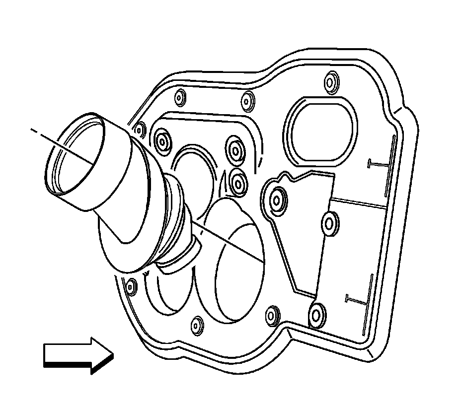

Intermediate Steering Shaft Seal Replacement
Intermediate Steering Shaft Seal Replacement
Removal Procedure
Important: The steering column is removed with the upper intermediate steering shaft attached.
1. Remove the steering column. Refer to Steering Column Replacement (Steering Column Replacement) .

2. Remove the intermediate steering shaft seal from the inside of the vehicle.
Left hand drive shown, right hand drive similar.
Installation Procedure
Important: Make sure the intermediate steering shaft seal is seated correctly upon installing.
1. Install the intermediate steering shaft seal from the inside of the vehicle.
Left hand drive shown, right hand drive similar.
2. Install the steering column. Refer to Steering Column Replacement (Steering Column Replacement) .